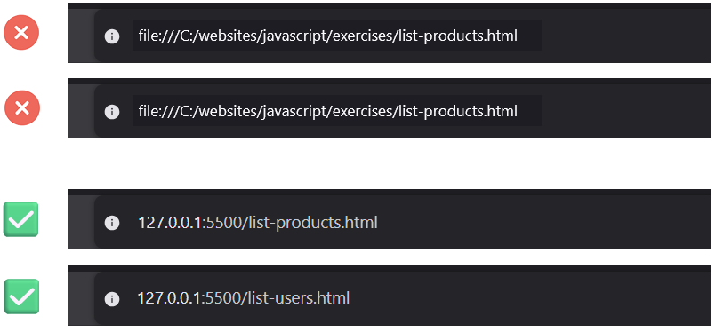
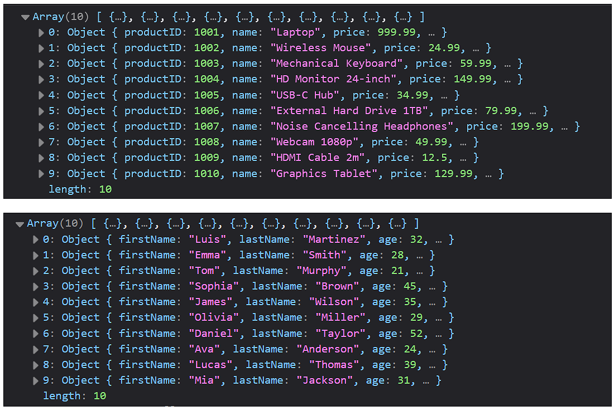

Learning Goals
At the end of this Tutorial, you will be able to:
- Create text files in JSON-format.
- Use the asynchronous Fetch API to retrieve files from a remote server.
- Understand the roles of the Promise and Response objects.
- Check for network errors with the try...catch (error) syntax.
For this Tutorial, in your javascript/exercises folder, create two new HTML files named list-products.html and list-users.html.
Create two new empty text files named list-products.js and list-users.js and save them in this same folder.
Add links to list-products.js and list-users.js in your list-products.html and list-users.html files using <script> tags with the defer attribute.
Make a sub-folder named data and in it, create two empty text files named products.json and users.json.
Introduction
Up until now, all data (variables, arrays, and objects) has been hard-coded inside the .js file. In the real world, data lives outside the code - in files or databases on the same or different servers.
To retrieve data from such sources, you need to learn about:
- JSON-format: This is the typical format for working with external data.
- Fetch API: Makes it possible to retrieve external data without the web page re-loading.
- Live server: For security reasons, the Fetch API runs only on a webserver.
What is JSON?
In the Arrays of objects tutorial, you learnt that spreadsheet-style structured data tables in rows and columns can be represented in JavaScript by an array of objects.

- Each record row is an object (with curly braces {}).
- Each object has the same keys (matching the spreadsheet columns).
- The items (objects) are separated by commas ,.
- The entire dataset is an array (with square brackets []).
Working with JSON-format data
JSON stands for JavaScript Object Notation. It is a common format for storing and moving data between files and web pages.
JSON data looks similar to JavaScript objects but has some key differences:
- Keys (property names) must be in double quotes. For example, "price" and "age".
- String values must be in double quotes. For example, "laptop" and "Smith".
- No trailing commas , after the last value in objects.
Creating two sample JSON files
Below are two examples of files with JSON-format data.
Copy the data below to your products.json file in your /data subfolder.
[
{ "productID": 1001, "name": "Laptop", "price": 999.99, "inStock": true },
{ "productID": 1002, "name": "Wireless Mouse", "price": 24.99, "inStock": true },
{ "productID": 1003, "name": "Mechanical Keyboard", "price": 59.99, "inStock": false },
{ "productID": 1004, "name": "HD Monitor 24-inch", "price": 149.99, "inStock": true },
{ "productID": 1005, "name": "USB-C Hub", "price": 34.99, "inStock": true },
{ "productID": 1006, "name": "External Hard Drive 1TB", "price": 79.99, "inStock": true },
{ "productID": 1007, "name": "Noise Cancelling Headphones", "price": 199.99, "inStock": false },
{ "productID": 1008, "name": "Webcam 1080p", "price": 49.99, "inStock": true },
{ "productID": 1009, "name": "HDMI Cable 2m", "price": 12.50, "inStock": true },
{ "productID": 1010, "name": "Graphics Tablet", "price": 129.99, "inStock": false }
]And copy this data to your users.json file in your /data subfolder.
[
{ "firstName": "Luis", "lastName": "Martinez", "age": 32, "isActive": true },
{ "firstName": "Emma", "lastName": "Smith", "age": 28, "isActive": false },
{ "firstName": "Tom", "lastName": "Murphy", "age": 21, "isActive": true },
{ "firstName": "Sophia", "lastName": "Brown", "age": 45, "isActive": true },
{ "firstName": "James", "lastName": "Wilson", "age": 35, "isActive": false },
{ "firstName": "Olivia", "lastName": "Miller", "age": 29, "isActive": true },
{ "firstName": "Daniel", "lastName": "Taylor", "age": 52, "isActive": true },
{ "firstName": "Ava", "lastName": "Anderson", "age": 24, "isActive": false },
{ "firstName": "Lucas", "lastName": "Thomas", "age": 39, "isActive": true },
{ "firstName": "Mia", "lastName": "Jackson", "age": 31, "isActive": true }
]A very basic example
The Fetch API is a method of JavaScript's global Window object and enables you to send HTTP requests to web servers and handle the responses.
You need to supply only a single argument to the fetch() method: the URL of the data that you want to fetch. This URL is known as an endpoint. See below.
const response = await fetch("url");The response variable holds a reference to the Response object returned by the Fetch API, which lets you read properties like response.ok and call methods like response.json() to parse the content.
Below is a very basic example if the Fetch API in action without error handling. Copy this to your list-products.js file:
async function fetchProductData() {
// Create a response object to hold the remote data
const response = await fetch("data/products.json");
// Convert the response object to a parsed JavaScript object
const data = await response.json();
// Verify the code is working by logging the data to the console
console.log(data);
}
// Call the function to execute the fetch request
fetchProductData();Next, copy this to your list-users.js file:
async function fetchUserData() {
// Create a response object to hold the remote data
const response = await fetch("data/users.json");
// Convert the response object to a parsed JavaScript object
const data = await response.json();
// Verify the code is working by logging the data to the console
console.log(data);
}
// Call the function to execute the fetch request
fetchUserData();CORS and the file:// protocol
Cross-origin resource sharing (CORS) is a browser mechanism which controls access to resources located outside of a given domain. For security reasons, CORS blocks JavaScript Fetch API requests when running directly from the file system. Web pages opened as file:// have an opaque origin (often treated as null).
For your list-products.html and list-users.html pages and their scripts to work correctly, you must run them through a local web server, such as the VS Code Live Server extension.
Ensure that you have the Live Server extension installed and running, and that your two HTML files are in your currently-selected folder.


Finally, open the Console for your two HTML files to see the fetched data.
The Fetch API is asynchronous
The Fetch API provides an async/await syntax for writing asynchronous code.
async function getSomeData() {
const response = await fetch("path/to/file.json");
// More code to process the response
}This means:
- The await keyword inside the getSomeData() function pauses the code until a response arrives from the server, which may take a number of seconds. It says: "Stop executing on this line. Don't move to the next line until a response comes back."
- Any delay by the fetch API in retrieving the remote data does not block the main thread of your code, From a user's perspective, the web page remains responsive and does not 'freeze.'
Working with the Promise and Response objects
The Fetch API uses two built-in JavaScript objects: the Promise and the Response objects. The async keyword before the function declaration makes the function first return a Promise.
This Promise object can have one of three possible statuses:
|
pending |
The request's initial state. |
|
fulfilled |
The request has completed successfully and a value is returned. |
|
rejected |
The request has failed and a reason (error) is returned. |
A Promise is said to be settled or resolved if it is either fulfilled or rejected, but not pending.
When the request completes successfully, the Promise resolves with a Response object.
You can think of the Response object as a 'package' that contains the headers, status code, security details and data returned from the server. It also contains built-in methods (see below) for working with the data.
The .json() and .text() methods
The data from the server is not directly accessible from the Response object. A Response is metadata plus a body stream. So you need to parse the data using one of two methods:
|
.text() |
Use this when the Response object contains 'raw' or 'plain' text, or HTML-formatted text. |
|
.json() |
Use this when the Response object contains only data in JSON format. |
Adding error-checking
Because a Fetch API request may be unsuccessful, it is important to add error-checking to your code. Update your list-products.js and list-users.js scripts with if/else branches as shown below. Note the 'bad' branch comes first.
async function fetchProductData() {
// Create a response object to hold the remote data
const response = await fetch("data/products.json");
if (!response.ok) {
// If response has an error status code, log a message
// This handles cases like 404 (not found), 500 (server error), etc.
console.log(`Network response was not ok - Status: ${response.status} ${response.statusText}`);
return; // Stop executing the function if there was an error
}
else {
// Convert the response object to a parsed JavaScript object
const data = await response.json();
// Verify the code is working by logging the data to the console
console.log(data);
}
}
async function fetchUserData() {
// Create a response object to hold the remote data
const response = await fetch("data/users.json");
if (!response.ok) {
// If response has an error status code, log a message
// This handles cases like 404 (not found), 500 (server error), etc.
console.log(`Network response was not ok - Status: ${response.status} ${response.statusText}`);
return; // Stop executing the function if there was an error
}
else {
// Convert the response object to a parsed JavaScript object
const data = await response.json();
// Verify the code is working by logging the data to the console
console.log(data);
}
}This will show both the numeric status code (like 404, 500, etc.) and the associated status text (like "Not Found" or "Internal Server Error"). So you will have detailed information about what went wrong with the request.
|
100-199 |
Informational responses |
|
200-299 |
Success responses |
|
300-399 |
Redirection messages |
|
400-499 |
Client error responses |
|
500-599 |
Server error responses |
Checking for errors with try...catch (error)
The if(!response.ok) condition handles situations where the server responded properly - even if the response was an error code such as 404 (Not Found) or 500 (Internal Server Error).
Wrapping all the code inside your function with a try-catch (error) clause provides wider protection against other types of errors.
About the try-catch (error) syntax
The try-catch statement allows you to test a block of code for errors and handle any exceptions that occur. The basic syntax is as follows.
try {
// Code that might cause an error
} catch (error) {
// Code to handle the error
}Here is how it works:
- The try block contains the code that might throw an error.
- If an error occurs, execution of that block stops immediately.
- Control transfers to the catch block.
- The catch parameter (commonly named error or err) contains information about the error.
- After the catch (error) block executes, the program continues running after the try...catch statement.
In summary:
|
if (!response.ok) {} |
This handles HTTP errors. The Fetch() API considers a "404 Not Found" or a "500 Server Error" to be a successful network connection. The server has successfully answered, "I don't have this file!" |
|
try...catch (error) |
This handles network and code failures. It triggers if the user loses their internet connection, if the DNS fails, or if the .json() method crashes because the file is corrupted. |
Let's do a final update on your two scripts. Here is list-products.js.
async function fetchProductData() {
try {
// The 'await' keyword pauses execution until the fetch Promise resolves
const response = await fetch("data/products.json");
if (!response.ok) {
// If response has an error status code, log a message
// This handles cases like 404 (not found), 500 (server error), etc.
console.log(`Network response was not ok - Status: ${response.status} ${response.statusText}`);
return; // Stop executing the function if there was an error
}
else {
// For successful responses, convert the response object to a parsed JavaScript object
const data = await response.json();
// Output the parsed user data object to the console
console.log(data);
}
} // End try block
catch (error) {
// Catch network errors, JSON parsing errors, or any other exceptions
console.error(`Error fetching product data: ${error}`);
}
}
fetchProductData();And here is the final version of list-users.js.
async function fetchUserData() {
try {
// The 'await' keyword pauses execution until the fetch Promise resolves
const response = await fetch("data/users.json");
if (!response.ok) {
// If response has an error status code, log a message
// This handles cases like 404 (not found), 500 (server error), etc.
console.log(`Network response was not ok - Status: ${response.status} ${response.statusText}`);
return; // Stop executing the function if there was an error
}
else {
// For successful responses, convert the response object to a parsed JavaScript object
const data = await response.json();
// Output the parsed user data object to the console
console.log(data);
}
} // End try block
catch (error) {
// Catch network errors, JSON parsing errors, or any other exceptions
console.error(`Error fetching user data: ${error}`);
}
}
fetchUserData();Outputting data to the web page
Now that you have successfully fetched and parsed the JSON data, let's display it on the web page. We will use the .forEach() method to loop through the array and dynamically generate HTML for each item.
Let's begin by adding an empty <div> element with an ID of products-container to the list-products.html file. This is where JavaScript will insert the generated content.
<div id="products-container"></div>Now, add the following function call at the end of the 'success path' try block in your fetchProductData() function in your list-products.js script file:
displayProducts(data);Next, add this new function at the bottom of your list-products.js file:
// Function to handle the DOM output
function displayProducts(productsArray) {
const container = document.getElementById("products-container");
let htmlOutput = "";
// Loop through each product in the array
productsArray.forEach(product => {
// Build the HTML string using compound assignment operator and template literals
htmlOutput += `
<p><b>${product.name}</b> Price: $${product.price} In Available?: ${product.inStock}</p>
`;
});
// Output the final HTML to the page
container.innerHTML = htmlOutput;
}Repeat the above steps for your list-users.html and list-users.js files.
Try it yourself
In your script file...
---
Change the fetch URL in one of your JavaScript sample files to the name of a file that does not exist - for example, data/wrong-file.json. Open your browser console and observe how your if (!response.ok) { } block catches the 404 error and logs the status.
More learning resources
Tutorial Quiz
Tutorial Podcast
Sample AI prompts
Explain the JavaScript fetch API and the concepts of async and await using a real-world analogy, like ordering food at a restaurant.
What is a CORS error in JavaScript? Explain it simply and tell me the most common ways developers fix or bypass it during local development.